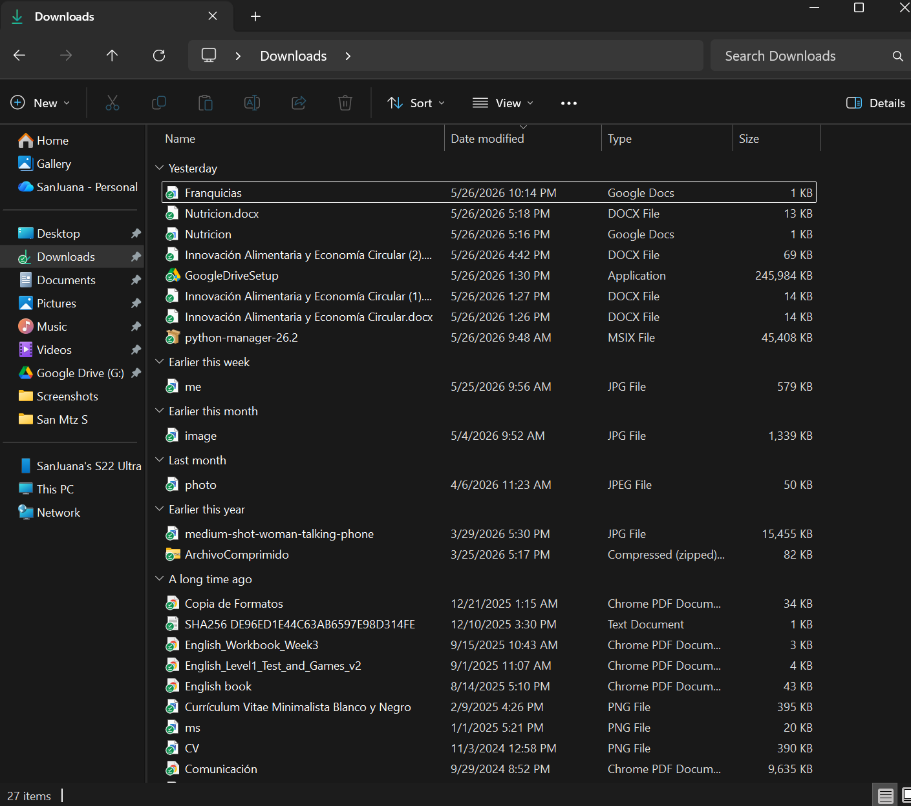

Día 20 Organizador de Archivos

Imagen tomada como evidencia del programa realizado
Organizador automático de archivos con Python
Hoy construí un pequeño proyecto en Python: un organizador automático de archivos.
La idea surgió de un problema cotidiano: las carpetas como “Descargas” suelen llenarse de archivos mezclados, lo que hace difícil encontrar información rápidamente. Entonces pensé en una solución simple: automatizar la organización de archivos usando código.
#### ¿Qué hace el proyecto?
El programa recorre una carpeta y organiza automáticamente los archivos según su tipo, por ejemplo:
Cada archivo es movido a su carpeta correspondiente sin intervención manual.
#### ¿Cómo funciona?
Para construirlo, utilicé Python y algunos conceptos básicos que he estado aprendiendo en CS50:
#### 1. Recorrer archivos con un loop
Uso un ciclo `for` para iterar sobre todos los archivos dentro de una carpeta.
Esto permite que el programa “vea” cada archivo uno por uno.
#### 2. Identificar el tipo de archivo con condicionales
Utilizo estructuras `if` para verificar la extensión del archivo.
Por ejemplo:
#### 3. Mover archivos con módulos del sistema
Uso los módulos `os` y `shutil` para interactuar con el sistema de archivos:
Lo más importante que aprendí
Más allá del código, este proyecto me ayudó a entender algo clave:
Los conceptos básicos de programación no son solo teoría, sino herramientas reales que pueden automatizar tareas del día a día.
Algo tan simple como un loop y una condición puede ahorrar tiempo y esfuerzo en tareas repetitivas.
Conclusión
Este proyecto no es complejo, pero representa un paso importante en mi proceso de aprendizaje.
Me permitió conectar lo que estoy aprendiendo en CS50 con algo práctico y funcional.
Siguiente paso: mejorar este script y hacerlo más dinámico.